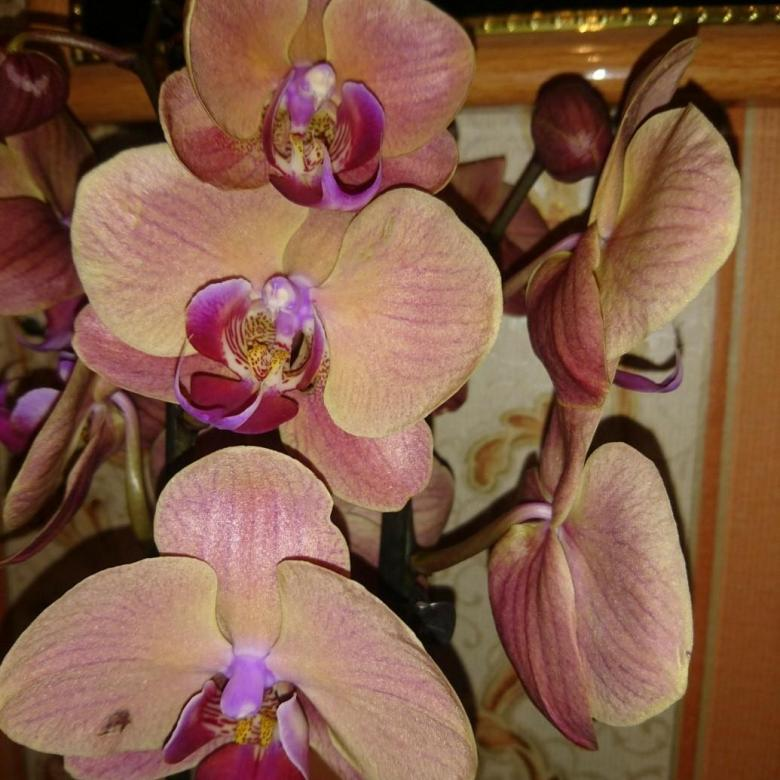
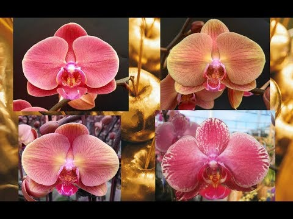
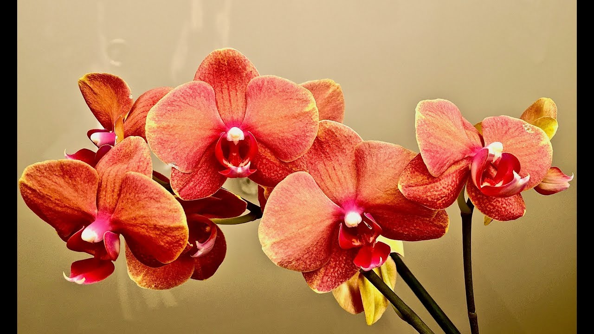

Phal. Golden Apple
Орхідея теплого сонячного забарвлення, при погляді на яку Вам завжди захочеться посміхатися.
Забарвлення її пелюсток поєднує в собі всі сонячні відтінки, від жовтого з боків до червонувато-оранжевого посередині. Причому на загальному тлі виділяються червонуваті прожилки, які надають особливий контраст і шарм даному сорту.
Така орхідея - справжня прикраса будь-якого будинку! Діаметр квітки - 8-9 см. Висота - 60-70 см.


